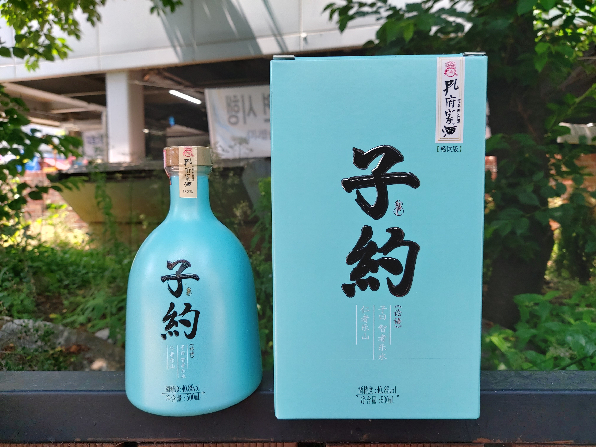

바이주는 양식(糧食)을 주원료로 하고 누룩을 당화발효제로 하여 당화 발효시켜 얻은 물료(物料)를 증류시켜 얻은 원액 알콜을 저장하고 숙성시킨 후 블렌딩을 통해 만든 중국 전통 증류 소주다. 
바이주는 그 종류를 여러가지로 분류할 수 있는데 가장 중요한 분류법은 술의 향(香)에 의한 분류다. 바이주에는 10개 이상의 향형이 존재하는데 그 중 가장 중요한 향형은 농향형, 청향형 그리고 장향형이다.
opentutorials